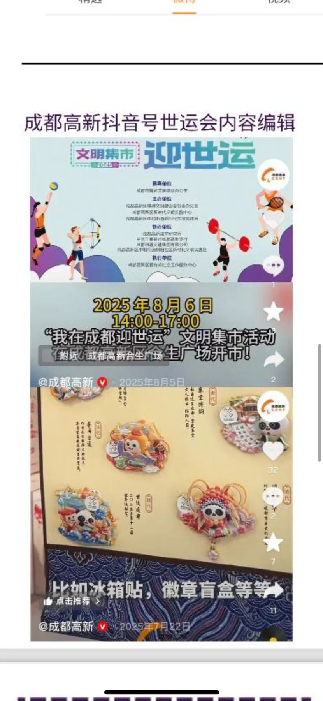
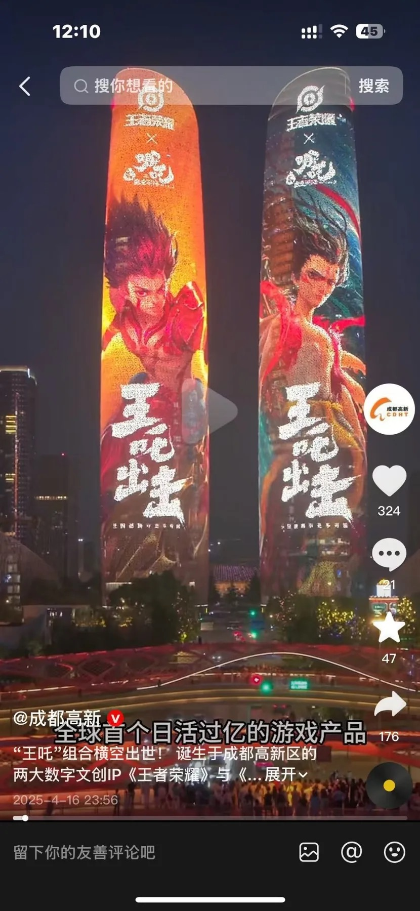
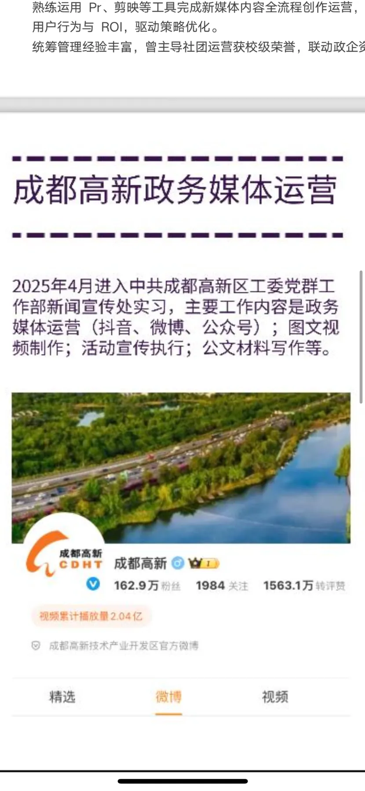
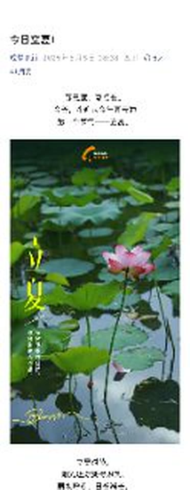
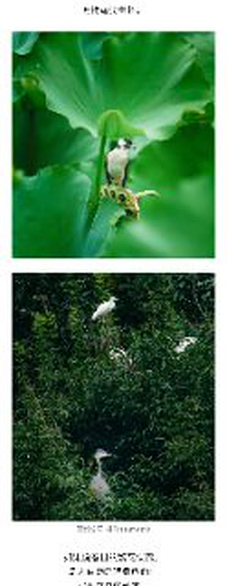
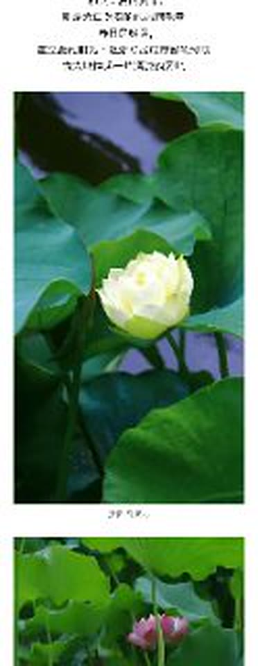

01 / PUBLIC-SECTOR MEDIA政务+媒体运营
我参与抖音、微博、微信公众号等政务新媒体平台运营，负责宣传选题策划、图文内容与短视频制作，以及线上活动预热、宣传推广和后续传播。参与 2025 成都世运会相关宣传策划与执行，独立制作“我在成都迎世运”系列两条主题短视频，助力世运会城市形象宣传及文明氛围营造。参与王者荣耀哪吒IP联动宣传活动，制作宣传视频，助力成都本土文创产业发展。





“我在成都迎世运”主题短视频
世运会文明宣传短视频
王者荣耀哪吒文创联动宣传